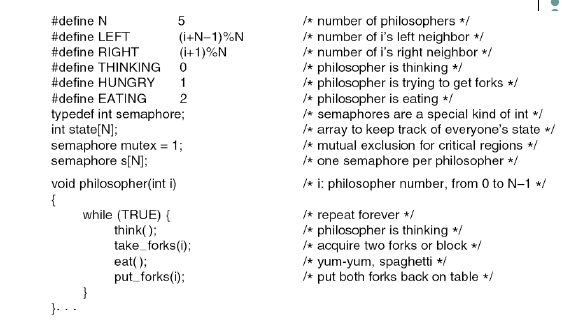
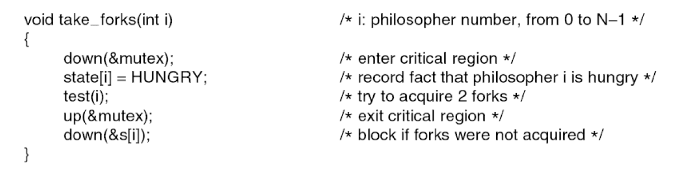
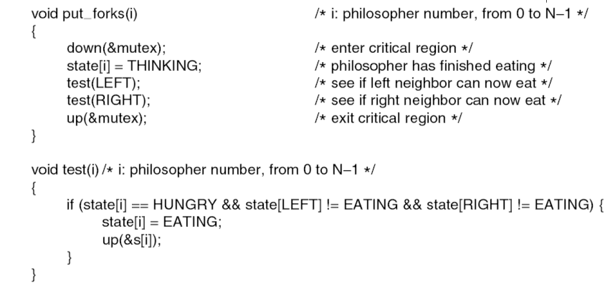
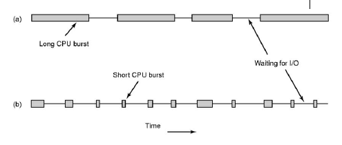

WEEK1: Intro to OS, Processes, threads
Intro to OS
- Regard OS as: abstraction provider, resource manager, program controller
- Kernel mode: Core to operating system, had the permission to access the OS. Normal prorgams are in user mode, which cannot access to the OS
- About the storage:

- Concurrency: problem caused by multiple processes executes concurrently.
Processes and threads
- Process: a prorgam in exexution, its like a container that contains all execution states of program in execution, and is named by the PID

- Process Control Block(PCB): process's data structure, contains all info about process, where OS keep all process' execution state(see the picture) when process not running
- Process state: ready/ blocked/ running

- State queues: OS keep track of processes by a collection of queues, one queue for each state

- Context switch: switch the CPU to another process, save state of old process, load saved state for new process
- Opreations on processes:
- process creation: process created by another process, fork (review in CSC209)
- process termination
- Parallel prorgams: create several processes that execute in parallel/ shared memoru for processes to share data, OS schedule these processes in parallel. parallel program is INEFFICIENT
- Parallel prorgams => cooperating processes share:
- same code and data
- same privileges (what does that mean?)
- same resources
- execution states like PC SP registers
Intro to Threads
- Thread: defines a sequential execution stream within a process (PC, SP, registers). Bound to a single process, but sinle process can have multiple threads. Processes are containers in which threads execute.
- Thread interface(Pthread API)
- Thread scheduling => scheduler determines when a thread runs. Uses queues to keep track of what threads are doing. Run queue/ ready queue
WEEK2:
WEEK4: Scheduling
Dining philosophers
- A philosopher needs two forks to eat (one in his left, one in his right), there aren't enough forks for them to eat simultaneously
- Key to solve the problem is to deal with the limited forks, the forks are shared resources and we can apply semaphore here.
- 
- 
- 
- Firstly we should transfer this practical problem to an operating system related problem.
Here philosphers are processes, forks are shared resources. Each philosopher could have
different states indicates:
- EATING: Use number 2, the philsopher is eating using both folks
- HUNGRY: Use number 1, the philosopher wants to eat but there isn't enough forks available
- THINKING: Use number 0, the philosopher doesn't want to eat.
- We want to give a mutual exclusion when philosopher want to take or put the forks, thus there is one semaphore for each philosopher
- The algorithm works like this: run philosopher => try to
take_fork(), set state to HUNGRY => usetest()to check the availability of forks => if not availale be blocked atdown(&s[i])/ if available, set state to EATING,up(&s[i])would unblock the process if previously blocked bydown(&s[i]). - After
eat(), we want toput_forks(), which change the state back to THINKING and try to activiate the neighbour who is previously being blocked because the forks are unavailable.
Some review before scheduling
- Process: program in execution, contains all state of program in execution, named by PID
- State queues: one queue for each state, each PCB queued on a state queue according to current state, when PCB changes state, PCB unlinks from one queue and linked to another
- Process scheduling: one process can run on each CPU and scheduler decides which one to run. There are two goals of scheduling:
- max CPU utilization
- give illusion that processes runing concurrently.
- Process states: different event cause changes to a process state, which OS must record.
- Context Switch: switch CPU to another process
- Saved currently running process statement (don't want to lose any data)
- Select next process from ready process
- Restore state of next process
- Restore register
- Switch to user mode
- Set PC to next instruction in this process
Scheduling
- Process life cycle, alternately switch between computation(CPU-burst) and I/O(I/O burst)
- CPU-bound: long CPU bursts, infrequent I/O burst
- I/O bound: short CPU bursts, frequent(long) I/O bursts. During I/O bursts, CPU not needed => opportunity to execute another process
-  a) CPU-bound process, b) I/O-bound process
- Processor scheduling is the allocation of processors to processes over time. Key to multiprogramming.
- Goals: fairness/ avoid starvation/ balance
- Two types of scheduling:
- non-preemptive: CPU keeps working on one process until it terminates.
- preemptive: CPU can be taken from running process and allocated to another. Need in real-time systems.
- Scheduling algorithms: FCFS
- content
- Example
- Problem
- Scheduling algorithms: SJF
- content
- Example
- Problem
- Scheduling algorithms: RR
- Priority queue
- Multi-level queue shceduling
- Feedback scheduling
- Linux 2.6 CPU scheduling
WEEK5: Memory management
Memory management
Assignment 1: System Calls and Monitoring Processes
Tips
- I am mainly going to talk about my own feeling about the assignment, including what I think might be hard or easy, and some useful tips (maybe?)
- Find all official introduction and start code HERE. Pls read several times with a very careful manner. You are fine if you can repeat all important instructions without looking at the original web page. Compare to other courses, CSC369 has a fairly long description telling you a lot about details. They are all important for writing the actual code.
- Understand all start code
- In general, you need to fill in X functions
interceptor=> Used to log message to all monitored function call, so we firstly make a check, and it the function is monitored, we write a function to log the message.my_syscall=> Core of the whole assignment. The goal is to implement 4 commands.REQUEST_SYSCALL_INTERCEPTREQUEST_SYSCALL_RELEASEREQUEST_START_MONITORINGREQUEST_STOP_MONITORING
my_exit_group(int status)=> This function is used to replace original exit_group function. Exit group works to terminate the current thread group. In our case, when a process exit, we want to remove its pid from all monitoring lists, so we have to explicitly write some code with give functions to achieve this goal.init_function=> Used for module initialization. By saying initialization we want to replace all system calls we want to hijack from the original system call table to our own. Of course we want to save a copy of the original system call so that we could resume it when we want to exit. Moreover we should change set system call table writable.exit_function=> Used for module exit. When exit we want to restore all of the original system call. Moreover we should set the system call table back to read only.
- Pro tips:
- Synchronization:
- struct pt_regs reg
- Test on virtual machine, might be tricky